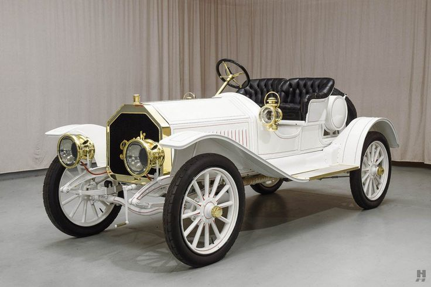
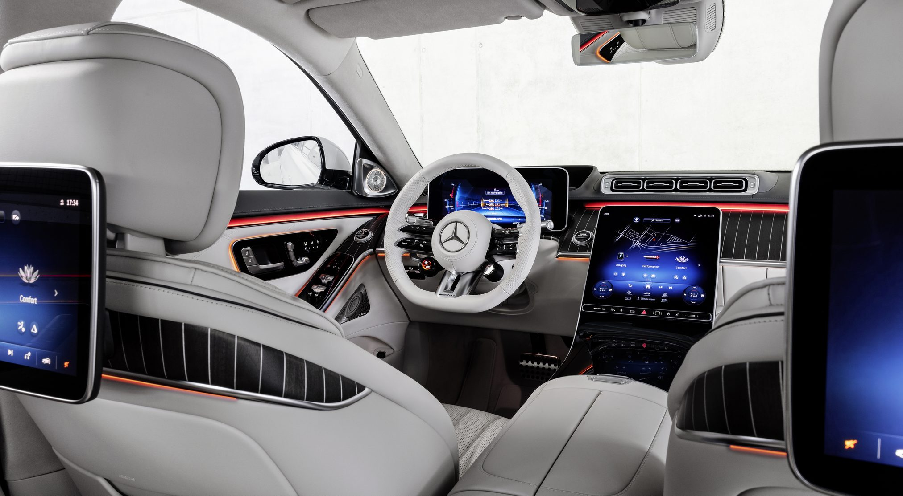
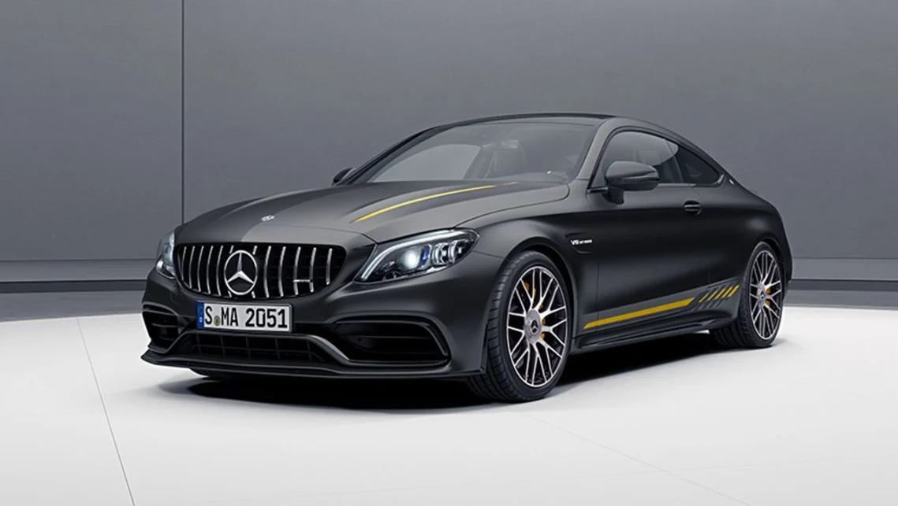
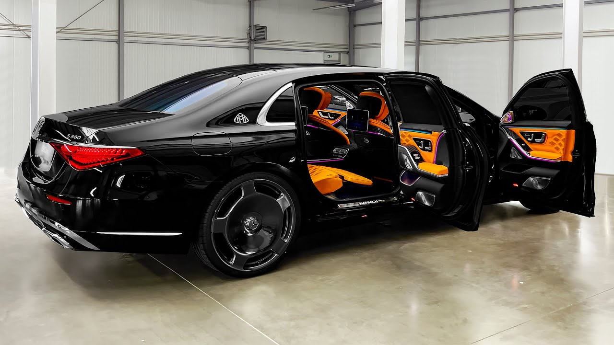
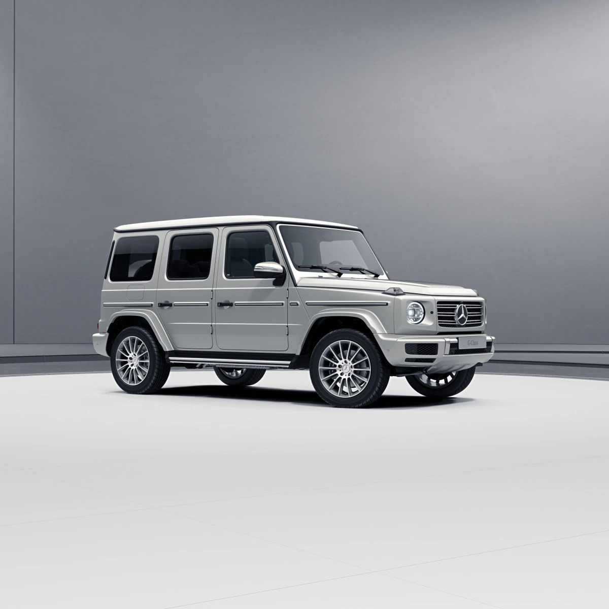

Embark on a journey of elegance and innovation with our Mercedes collection. Where sophistication meets performance, every drive is a statement of luxury.
Vintage allure, timeless prestige – Mercedes-Benz, where the echoes of sophistication reverberate through the ages. Step into the classic embrace of high-end craftsmanship that transcends time.

Experience the thrill of commanding power under the hood, paired with an array of intelligent features that redefine connectivity and safety. The E-Class isn't just a car; it's a statement of refined taste, a harmonious blend of style and substance. Whether you crave the thrill of dynamic driving or the comfort of a first-class cabin, the Mercedes-Benz E-Class is poised to exceed your expectations, setting new standards in the world of luxury automobiles.
Elevate your drive to a realm of pure indulgence. The Mercedes-Benz S-Class is not just a car; it's a statement of refined taste, a sanctuary of comfort and style.
Sculpted for the city, engineered for exhilaration. The Mercedes-Benz C-Class – your passport to a world where luxury and dynamism converge effortlessly.

The 1957 300 SL Coupe – where nostalgia meets horsepower. A relic of the past that still roars with the spirit of adventure, reminding us of the golden age of automotive design and engineering.
Crafted for those who demand the extraordinary, Maybach stands as a testament to automotive magnificence. Drive into a realm where time-honored tradition meets cutting-edge technology.
Distinguished on Any Terrain, Admired on Every Street – The G-Class: A Symbol of Grit and Glamour. Unapologetically bold, the G-Class commands attention wherever it goes. Whether navigating through rocky terrains or turning heads in the city, its presence is nothing short of iconic. But the G-Class isn't just about appearances; it's about substance. Behind its rugged exterior lies a vehicle engineered for peak performance and unmatched durability. It's a symbol of grit and glamour, where the raw power of off-road capability meets the refined elegance of a luxury SUV. Embrace the duality, embrace the legend – this is the G-Class.